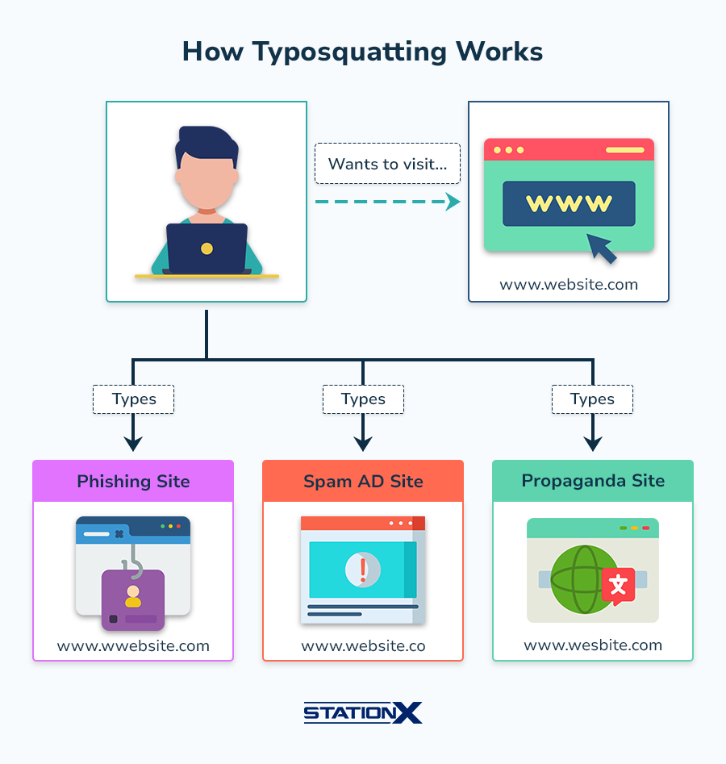

O que é Typosquatting?
Typosquatting é uma das formas de crime cibernéticos onde registram domínios parecidos com sites populares, porém com erros de digitação por parte dos usuários para sites falsos.
Riscos Envolvidos
- Phishing: Solicitar informações pessoais, como nomes de usuário, senhas, números de cartão de crédito e endereços.
- Disseminação de malware: Instalar software malicioso no dispositivo do usuário, mesmo sem o seu consentimento, como por meio de "drive-by downloads".
- lRoubo de dados: Capturar informações confidenciais e sensíveis para fins criminosos.
Como Detectar e Se Proteger
Sempre verifique cuidadosamente o endereço do site, use navegadores com proteção contra phishing e mantenha seu antivírus atualizado.